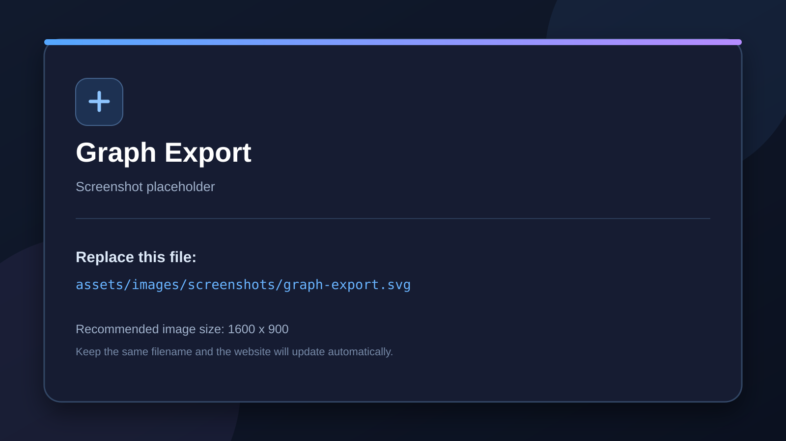

Audited against addon source
Graph Export
Export organized Logic Bricks graphs as images for teaching and documentation.
Export Graph Image
Choose Options → Export Graph Image to create an image of the graph for tutorials, books, lessons, or issue reports.
What is included
The export system is designed to capture graph bricks and frames, including frame presentation, so the exported image mirrors the organized editor graph.
Screenshot folder
Website images belong in
assets/images/screenshots/
. Keep the existing filenames or update the corresponding HTML image path.
